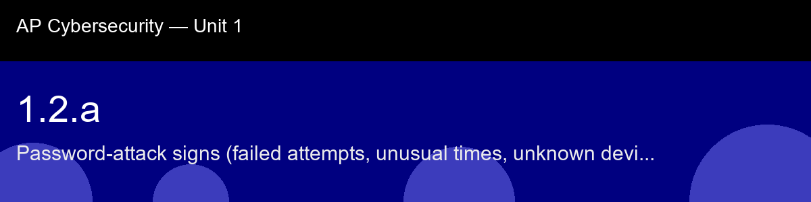

1.2.a recap, Password-attack signs (failed attempts, unusual times, unknown devices)
Nice work today. Here's what to lock in:
- Recap handout:
post-lecture-handout.docx
- Simulation: SimLab
- Self-check quiz: due before next class
The big picture: Notice something quietly important buried in "what happens after detection": a lockout stops future guesses, but it does nothing to undo a success that already happened before the threshold tripped. That's why the response checklist ends with "review the logs to determine whether a successful login occurred before the lockout", detection isn't the finish line, it's the trigger for an investigation. Carry that distinction with you into every later detection topic in this course: catching the pattern and confirming the blast radius are two separate jobs.
Key terms to lock in:
- Brute-force attack, automated, exhaustive attempt to guess a credential by trying many possible values.
- Dictionary attack, brute-force variant that tries passwords from a wordlist rather than every possible character combination.
- Credential stuffing, using username/password pairs from a known breach to attack other services, exploiting password reuse.
- Authentication failure spike, a rapid burst of failed login events for the same account, a primary indicator of automated attack.
- Behavioral baseline, the normal pattern of activity for an account; deviations from it trigger anomaly-based alerts.
- Correlation, combining multiple signals to reduce false positives in security detection.
Common misconceptions -- don't fall for these:
- "A few failed logins are not a big deal." → A few in an hour is noise. Five in sixty seconds is a strong indicator of automation; the rate, not the raw count, is what matters.
- "The attacker needs to know my username to try passwords." → Credential stuffing uses lists of real usernames from breaches. On Wi-Fi routers the admin username (admin) is often public knowledge from the manufacturer's manual.
- "A locked account means I am safe." → Lockout stops the brute-force, but if a success event appears in the log before the lockout triggered, the account may already be compromised.
Learning objective(s): 1.2.A

## 1.2.a recap, Password-attack signs (failed attempts, unusual times, unknown devices)
Nice work today. Here's what to lock in:
- Recap handout: `post-lecture-handout.docx`
- Simulation: SimLab
- Self-check quiz: due before next class
**The big picture:** Notice something quietly important buried in "what happens after detection": a lockout stops future guesses, but it does nothing to undo a success that already happened before the threshold tripped. That's why the response checklist ends with "review the logs to determine whether a successful login occurred before the lockout", detection isn't the finish line, it's the trigger for an investigation. Carry that distinction with you into every later detection topic in this course: catching the pattern and confirming the blast radius are two separate jobs.
**Key terms to lock in:**
- **Brute-force attack**, automated, exhaustive attempt to guess a credential by trying many possible values.
- **Dictionary attack**, brute-force variant that tries passwords from a wordlist rather than every possible character combination.
- **Credential stuffing**, using username/password pairs from a known breach to attack other services, exploiting password reuse.
- **Authentication failure spike**, a rapid burst of failed login events for the same account, a primary indicator of automated attack.
- **Behavioral baseline**, the normal pattern of activity for an account; deviations from it trigger anomaly-based alerts.
- **Correlation**, combining multiple signals to reduce false positives in security detection.
**Common misconceptions -- don't fall for these:**
- "A few failed logins are not a big deal." → A few in an hour is noise. Five in sixty seconds is a strong indicator of automation; the rate, not the raw count, is what matters.
- "The attacker needs to know my username to try passwords." → Credential stuffing uses lists of real usernames from breaches. On Wi-Fi routers the admin username (`admin`) is often public knowledge from the manufacturer's manual.
- "A locked account means I am safe." → Lockout stops the brute-force, but if a success event appears in the log before the lockout triggered, the account may already be compromised.
**Learning objective(s):** 1.2.A